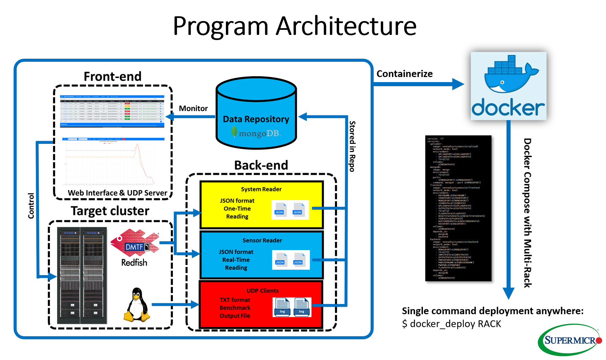

Learn more about the developers creating and maintaining Linux Cluster Monitor, how and why the project started.
This project is lead by Reeann Zhang, the manager of HPC & AI team (also kowned as Rack team). It is created and currently maintained by:
This program consists of two parts: the front-end and back-end, the front-end is based on flask a micro web framework written in Python.
The back-end is supported by mongoDB, Redifsh module and Intelligent Platform Management Interface (IPMI) toolkit.
The real-time system data is query from Baseboard Management Controllers (BMC) by redfish module and IPMI toolkit, stored in the mongoDB databse. And the data is visuallized by the webpage front-end.
The latest progress has included the UDP-server/client support for this program which is the basis of benchmark support.

The first version of this programe is createdin 2019. Including basic sensor reading and redfish query functions.
From early 2020, advanced functions and pdf report have been added along with new UI design, performance optimization and debugs.
Since early 2022, most advanced features have been completed, ajax functions have been applied and UDP module has been used for benchmarking and system maintainence.
For any bugs report and technical support, please contact Chenyang Li: (408) 646-4745 or chenyangl@supermicro.com.
For more informations about our group, please vist HPC & AI Group Memebers.
For more informations about our company, please vist Supermicro Solution and Integration Center.